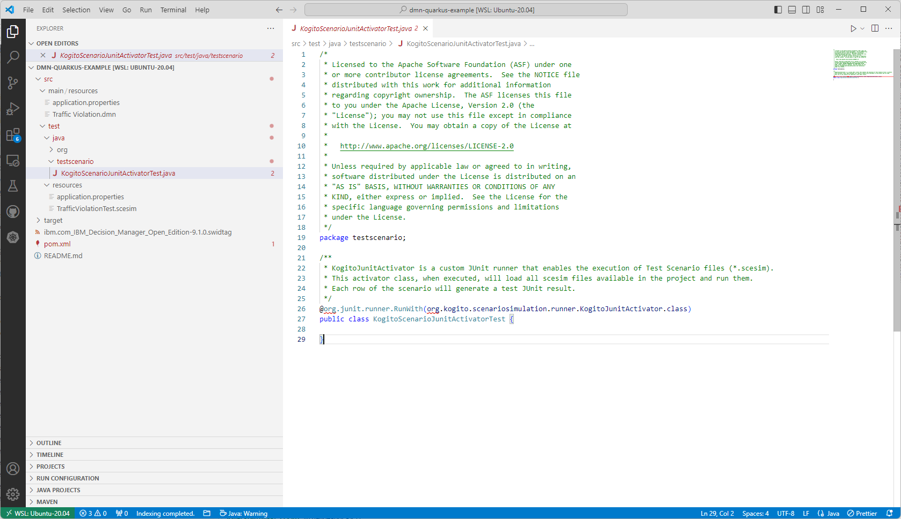
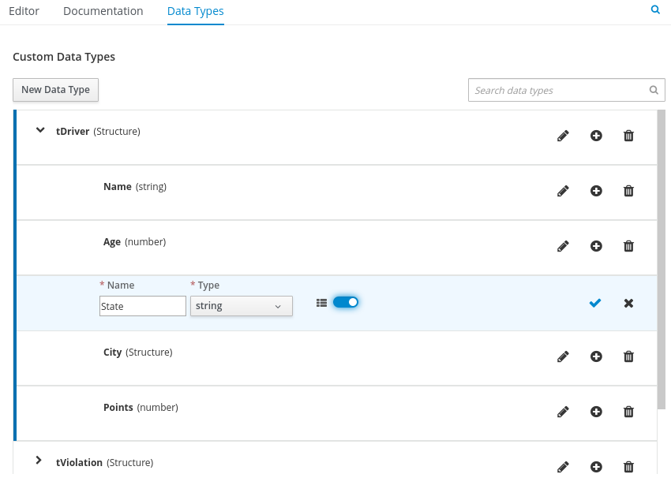
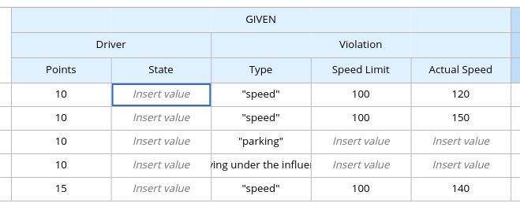
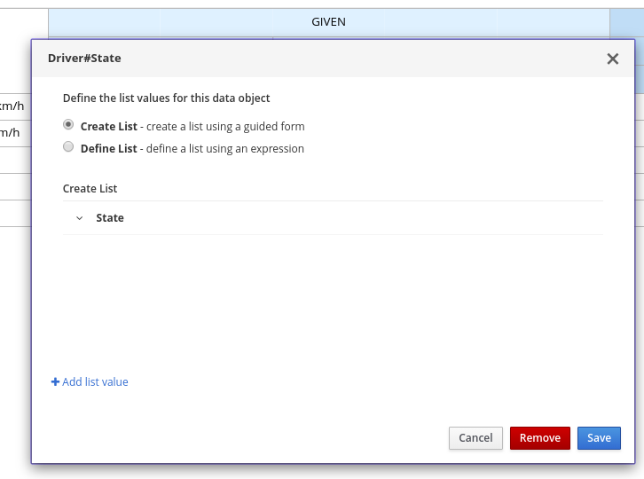
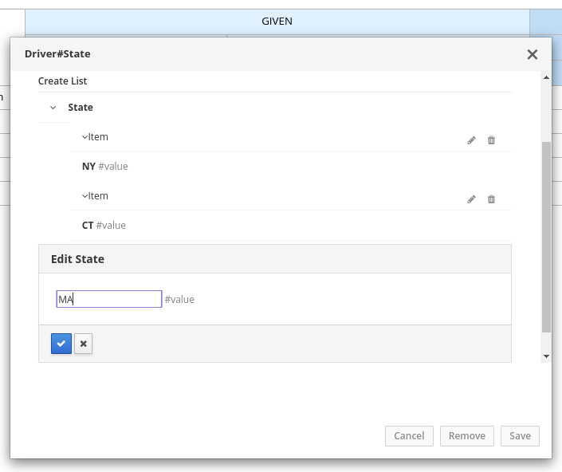
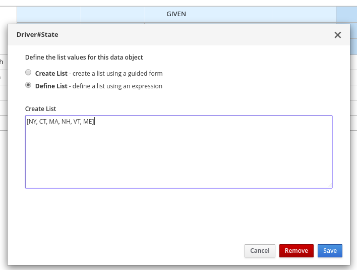
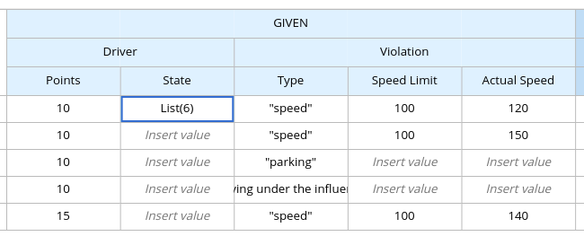

As a developer of business decisions, you can use Test Scenarios in IBM BAMOE to test the decision logic in your decision services. Test Scenarios enable you to ensure that your decision services are functioning properly and as expected as you develop your Business Service.
Currently, Test Scenarios can be created and modified with BAMOE Developer Tools for VS Code.
Some features present in BAMOE Canvas are not available for BAMOE Developer Tools for VS Code, but you can achieve a similar experience of DMN Runner with BAMOE’s Test Scenario Editor.
Creating unit tests with Test Scenarios
Test Scenarios in IBM BAMOE enable you to validate the functionality of business decisions and business decision data during project development. With a Test Scenario, you use data from your project to set given conditions and expected results based on one or more defined business decisions. When you run the scenario, the expected results and actual results of the decision instance are compared. If the expected results match the actual results, the test is successful. If the expected results do not match the actual results, then the test fails.
You define Test Scenarios in .scesim (scenario simulation) files that you can model in Visual Studio Code (VS Code) using BAMOE Developer Tools for VS Code. You can use one or multiple .scesim files in your Business Service project, and each .scesim file can contain one or multiple Test Scenarios based on the defined decision data.
When you run the Test Scenarios in your Business Service project, all Test Scenarios in all .scesim files are run as part of the same command. However, individual Test Scenarios are independent, so one scenario cannot affect or modify another. You can run Test Scenarios at any time during project development. You do not need to compile or deploy your decision service to run Test Scenarios, but your Business Service project needs to be compilable and free from build errors.
This documentation provides a step-by-step guide on how to use the Test Scenario Editor in VS Code to test DMN assets created in BAMOE. For more information, see an existing project in kie-kogito-examples GitHub repo. However, this reference will provide the steps to enable Test Scenario in your own project.
|
Note
|
Currently, BAMOE supports DMN-based Test Scenario only and not the Rule-based Test Scenario. It is still possible to run a Rule-based Test Scenario generated with BAMOE version 8.0.x in Business Central using the old APIs. You can find an example here. |
Also, all the DMN-based scesim assets created prior to version 9.3.0 requires a user action to update the related DMN file location. This is requested because the DMN file path is now managed in a relative format.
Project Setup
To run the scenario, you must have set up BAMOE Maven repository and BAMOE Developer Tools for VS Code. See Installing. Optionally, you can use Language Support for Java™ by Red Hat.
Cloning the Example Project
If you are a new BAMOE user and do not have any project to set up yet, or you prefer having an out-of-the-box project to deal with, you can use the previously mentioned example in the incubator-kie-kogito-examples repository.
-
Clone the
incubator-kie-kogito-examplesrepository. -
Open VS Code and navigate to
incubator-kie-kogito-examples/kogito-quarkus-examples/dmn-quarkus-example. This project contains all the necessary files and prerequisites for this tutorial.
Setup any project
To enable Test Scenario in your project, follow these steps:
-
Add the required Test Scenario dependency: Add the following dependency to your project’s
pom.xmlto enable the Test Scenario runner:<dependency> <groupId>org.kie.kogito</groupId> <artifactId>kogito-scenario-simulation</artifactId> <scope>test</scope> </dependency> -
Create
KogitoScenarioJunitActivatorTest.java: Create theKogitoScenarioJunitActivatorTest.javafile in thesrc/test/java/testscenariodirectory:package testscenario; import org.drools.scenariosimulation.backend.runner.TestScenarioActivator; @TestScenarioActivator public class KogitoScenarioJunitActivatorTest { } -
Create Resources Directory: Create the
src/test/resourcesdirectory for storing.scesimfiles.
Creating a Test Scenario
Create PersonDecisions.dmn file in src/main/resources directory.
Its content is available at Example PersonDecisions DMN file section.
It is the first model that is tested using a .scesim file.
Then, in the src/test/resources directory, create a new file with the .scesim extension.
For this example, the Test Scenario file corresponds to a PersonDecisions.dmn model in the Business Service project:
The Test Scenario Editor automatically generates a scenario template based on the available DMN data types and fields that you defined in the DMN model.
The GIVEN columns specify input conditions based on the corresponding decision service. The EXPECT column specifies the expected results of the decision service based on the defined GIVEN conditions. Each row in the table is a defined scenario with example values for the GIVEN and EXPECT definitions to test the decision logic of the corresponding decision service.
You can right-click the relevant header cells to insert or delete columns as needed to modify the table structure. You can also select the relevant header cells to modify or insert data objects from the Test Tools panel in the right toolbar.
Modify the generated Test Scenario header cells and specified data objects as needed to design the Test Scenario template. Many of the header cell values might already be defined for you.
Use the following resources in the right toolbar of the Test Scenario Editor to help you design your Test Scenario header cells:
-
Settings: Use this panel to change the target DMN model selection if needed or to select the option Skip this simulation during the test. This skip option excludes the Test Scenario file from being run when you run all Test Scenario files in the Business Service project. If you update these settings, you must save, close, and then reopen the Test Scenario file for the changes to take effect.
-
Test Tools: Use this panel to select and insert the data objects for a selected header cell. These data objects come from the target DMN model specified in the Settings toolbar option.
-
Scenario Cheatsheet: Use this panel to review supported Test Scenario table actions, syntax, and other options.
For this example, the Test Scenario file defines the following parameters:
-
GIVEN: The first header cell (instance) is set to the Person data object and the subheader cells (properties) are set to the Age and Name data objects. Any other generated columns under GIVEN are deleted.
-
EXPECT: The first header cell (instance) is set to the isAdult data object and the subheader cell (property) is set to the value data object. Any other generated columns under EXPECT are deleted.
In row 1, create a Test Scenario with values for the GIVEN and EXPECT definitions to test the decision logic of the corresponding decision service.
For this example, the Test Scenario specifies the following values:
-
Scenario description:
Is an adult -
GIVEN: Set the following values:
-
Person → Age:
20 -
Person → Name:
John Quark
-
-
EXPECT: Set the following value:
-
isAdult → value:
true
-
The corresponding PersonDecisions.dmn model in this example contains an isAdult DMN decision that determines the persons with more than 18 years of age are adults. This example Test Scenario tests whether the person John Quark with 20 years of age is correctly identified by the isAdult DMN decision as an adult (true), based on the decision logic.
Right-click any cell in row 1 and select Insert row below to create additional Test Scenarios as needed.
For this example, a second Test Scenario in row 2 specifies the following values:
-
Scenario description:
Is underage -
GIVEN: Set the following values:
-
Person → Age:
15 -
Person → Name:
Jenny Quark
-
-
EXPECT: Set the following value:
-
isAdult → value:
false
-
This example scenario tests whether the person Jenny Quark with 15 years of age is correctly identified by the isAdult DMN decision as not an adult (false), based on the decision logic.
-
Continue adding Test Scenarios as needed to complete the Test Scenario file.
The following Test Scenario file is the completed PersonDecisionsTest.scesim example:
This example Test Scenario file tests the decision logic for the following PersonDecisions.dmn model in the Business Service project. The DMN model determines whether the specified person is an adult or is underage.
If you plan to use the same value for a GIVEN input condition in all Test Scenario rows in the file, you can use the Background tab to define the global header cell and value definitions and exclude the column from the Test Scenario table template. The GIVEN input conditions in the Background page are treated as background data for the table and are applied to all Test Scenarios listed.
For example, if the previous Test Scenario example requires the same value for the person Age in all Test Scenarios, you can define the Age value in the Background page and exclude that column from the Test Scenario table template. In this case, the Age is set to 20 for all Test Scenarios.
The following Test Scenario file is a more advanced TrafficViolationTest.scesim example:
This example Test Scenario file tests the decision logic for the following Traffic Violation.dmn model in the Business Service project. This DMN model determines fine amounts and driver suspension for traffic violations.
Defining list values in Test Scenarios
|
Note
|
This feature is available in the Test Scenario Editor (classic) only. In the new Test Scenario Editor, you need to use a DMN FEEL expression to define a List value. |
When data types in Decision Model and Notation (DMN) models are configured as List types, you can set the values of the list for that data object in the corresponding Test Scenario. You can define list values in cells for both GIVEN and EXPECT columns.
-
In your VS Code IDE, open the DMN file that contains the decisions that you want to test and select the Data Types tab to view the data types for the DMN model.
-
Add or modify a data type of any kind, toggle the List option to define the data type as a list, and save the DMN file.
For example, the following
Statedata type is part of a DMN model for determining fine amounts and driver suspension in a traffic violation decision service. In this case, theStatedata type is defined as aListtype so that the relevant states can be explicitly listed in the decision service or Test Scenarios.Figure 13. Example 'State' data type as a list -
Add or modify a Test Scenario (
.scesim) file that corresponds to the DMN decision service and insert the DMN data type that you defined as aListtype in a relevant GIVEN or EXPECT header cell.For example, the following
TrafficViolationTest.scesimTest Scenario file uses the Driver → State data object defined previously as aListtype as part of the GIVEN parameters for the traffic violation scenarios.Figure 14. Example 'State' data type in a Test Scenario header cell -
Double-click a value cell in the column and in the window that appears, select from the following options:
-
Create List: Use this option to create a list using the guided form in the window. Select Add list value to begin adding list values.
-
Define List: Use this option to define a list as a Friendly Enough Expression Language (FEEL) literal expression.
Figure 15. Create a list in guided formFigure 16. Define a list as FEEL expression -
-
Click Save in the list window to save the list values.
The value for the selected cell in the Test Scenario is now defined with the new list.
Figure 17. Example list for 'State' cell value
Supported FEEL data types in DMN Test Scenarios
The Test Scenario Editor supports the following Friendly Enough Expression Language (FEEL) data types for Decision Model and Notation (DMN) Test Scenarios:
| Supported data types | Description |
|---|---|
Numbers |
Numbers based on the IEEE 754-2008 Decimal 128 format, with additional number notations extended by IBM BAMOE, such as |
Strings |
Any sequence of characters delimited by double quotation marks, such as |
Boolean values |
|
Dates, time, and date and time |
Date literals, time literals, and combined date and time literals, such as |
Years and months duration, days and time duration |
Duration strings for years, months, days, hours, minutes, and seconds that follow the format defined in the XML Schema Part 2: Datatypes document, such as |
Functions |
Built-in math functions, such as |
Contexts |
Lists of key and value pairs, such as |
Ranges and lists |
Range literals and list literals, such as |
For more information about supported Test Scenario actions and data types, see the Scenario Cheatsheet icon in the right toolbar of the Test Scenario Editor in Visual Studio Code (VS Code).
For more information about FEEL data types, see DMN FEEL Handbook.